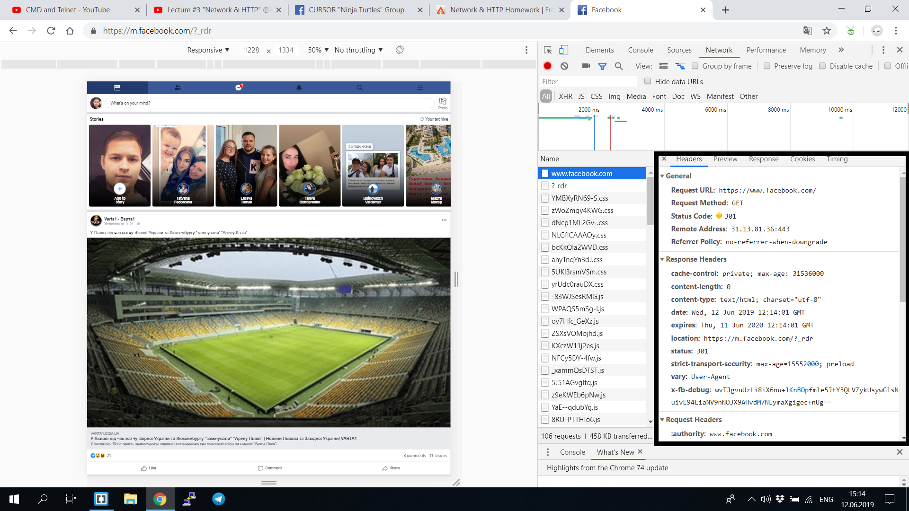

Homework HTTP
Task 1
- Facebook

- Google

- frontend-materials.cursor.education

- Duolingo

- show-english.com

Task 2
Поддержка прокси и поле хоста:
HTTP 1.1 имеет требуемый заголовок узла по спецификации. HTTP 1.0 официально не требует заголовка Host, но не помешает добавить его, и многие приложения (прокси) ожидают увидеть заголовок Host независимо от версии протокола.
Стойкие соединения:
HTTP 1.1 также позволяет иметь постоянные соединения, что означает, что вы можете иметь более одного запроса/ответа на одно и то же HTTP-соединение. В HTTP 1.0 вам нужно было открыть новое соединение для каждой пары "запрос/ответ". И после каждого ответа соединение будет закрыто. Это приводит к некоторым большим проблемам с эффективностью из-за TCP Slow Start.
Метод OPTIONS:
HTTP/1.1 вводит метод OPTIONS. HTTP-клиент может использовать этот метод для определения возможностей HTTP-сервера. Он в основном используется для совместного использования ресурсов Cross Origin в веб-приложениях.
Кэширование:
HTTP 1.0 поддерживал кэширование через заголовок: If-Modified-Since. HTTP 1.1 расширяет поддержку кеширования, используя что-то, называемое тегом сущности. Если 2 ресурса одинаковы, то они будут иметь те же теги сущностей. HTTP 1.1 также добавляет условные заголовки If-Unmodified-Since, If-Match, If-None-Match.
Основное различие методов GET и POST состоит в способе передачи данных веб-формы обрабатывающему скрипту, а именно:
Метод GET отправляет скрипту всю собранную информацию формы как часть URL: http://www.komtet.ru/script.php?login=admin&name=komtet Метод POST передает данные таким образом, что пользователь сайта уже не видит передаваемые скрипту данные: http://www.komtet.ru/script.php
Task 4

- Date →Fri, 14 Jun 2019 20:49:48 GMT (дата запиту)
- Expires →-1
- Cache-Control →private, max-age=0
- Content-Type →text/html; charset=ISO-8859-1
- Content-Encoding →gzip
- Server →gws
- Content-Length →5536
- X-XSS-Protection →0
- X-Frame-Options →SAMEORIGIN
- Set-Cookie →1P_JAR=2019-06-14-20; expires=Sun, 14-Jul-2019 20:49:48 GMT; path=/; domain=.google.com
Cache-Control используется для задания инструкций кэширования как для запросов, так и для ответов. Инструкции кэширования однонаправленные: заданная инструкция в запросе не подразумевает, что такая же инструкция будет указана в ответе
В ответах сервера заголовок
Content-Type сообщает клиенту, какой будет тип передаваемого контента.
Заголовок объекта Content-Encoding используется для сжатия медиа-типа. Когда оно присутствует, его значение указывает, какие кодировки были применены к телу объекта. Это позволяет клиенту знать, как декодировать, чтобы получить медиа-тип, на который ссылается заголовок Content-Type.
Заголовок ответа HTTP X-XSS-Protection это особенность Internet Explorer, Chrome и Safari, которая останавливает загрузку страниц при обнаружении (XSS) атаки. Хотя эти меры защиты не требуются в большинстве случаев для современных браузеров, когда сайты внедряют сильную политику безопасности контента Content-Security-Policy, которая отключает использование встроенного JavaScript ('unsafe-inline'), они могут обеспечить защиту для пользователей, использующих устаревшие версии браузеров, не поддерживающих CSP.
X-XSS-Protection Атака XSS (межсайтовый скриптинг) это тип атаки, при котором вредоносный код может быть внедрён в атакуемую страницу. Например вот так: Такой тип атаки легко обнаружить и браузер вполне может с этим справиться: если в исходном коде содержится часть запроса, то это может оказаться угрозой. И заголовок X-XSS-Protection управляет этим поведением браузера. Принимаемые значения: 0 фильтр выключен
HTTP-заголовок ответа Set-Cookie используется для отправки файлов cookie с сервера пользовательскому агенту.
Task 5

В ответе не получил код во вкладке Body(отсутсвует HTML код)